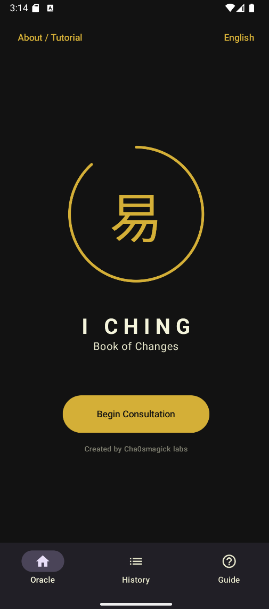
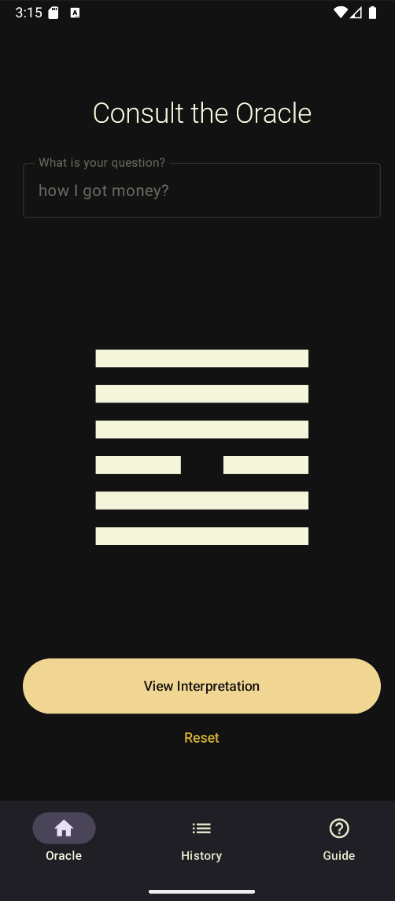
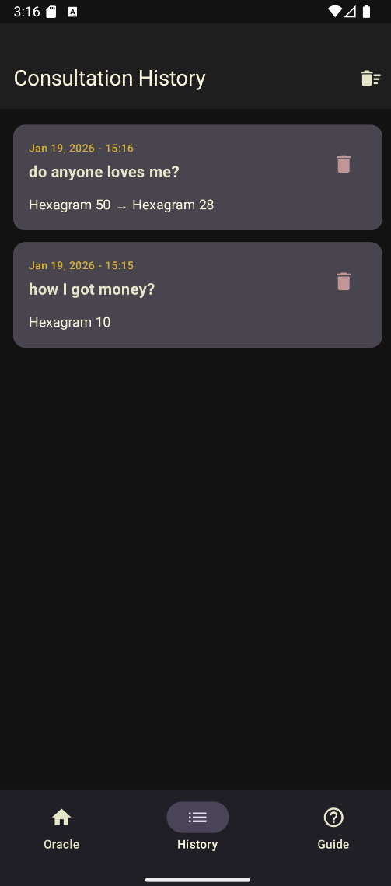
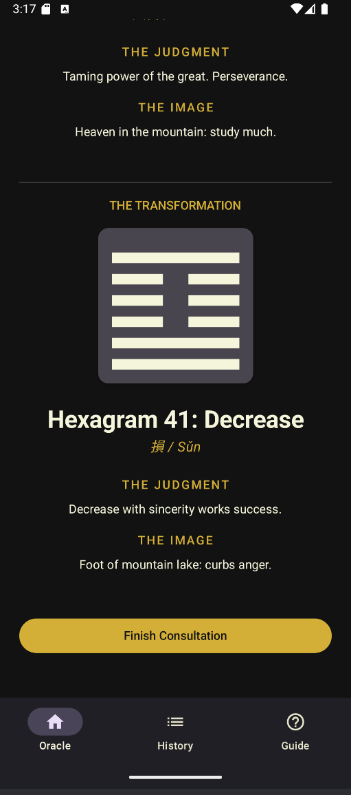

I Ching Oracle
Cast the I Ching with an authentic three-coin algorithm. 64 hexagrams, multilingual, and totally private.




What Is I Ching Oracle? The Ancient Book of Changes Reimagined for Android
For over three millennia, the I Ching (Book of Changes) has been the definitive oracle of Chinese philosophy — a system of wisdom consulted by emperors, strategists, and seekers facing life's deepest questions. The I Ching Oracle brings this tradition to your pocket with a state-of-the-art digital simulation of the authentic three-coin method, complete interpretations for all 64 hexagrams, and a beautiful, distraction-free interface built with Jetpack Compose.
How It Works: Authentic Three-Coin Casting
Our advanced logic engine simulates the traditional three-coin method exactly as practiced for millennia. Each of the six lines is calculated as Yin or Yang, old or young, building your Original Hexagram line by line. If changing lines appear, the app automatically generates the Transformed Hexagram — revealing not only your current situation but the direction of change itself.
Key Features
- 64 Complete Hexagrams: Every symbol with full meaning, judgment, and line-by-line interpretation drawn from classical sources.
- Authentic Three-Coin Algorithm: Strictly faithful to tradition — each cast is mathematically accurate and spiritually meaningful.
- Reading History: All readings saved locally. Revisit past consultations and track your spiritual growth over time.
- Built-in Learning Guide: Comprehensive educational section covering hexagrams, lines, interpretation methods, and Taoist philosophy.
- Multilingual Support: Fully available in English, Spanish, French, German, and Italian.
- Total Privacy: Every query stays on your device. No accounts, no cloud, no tracking.
Who Is the I Ching Oracle For?
- Spiritual Seekers looking for daily guidance and deeper connection to Taoist philosophy.
- Divination Practitioners who need an accurate, traditional casting method in digital form.
- Philosophers & Meditators who use hexagrams as contemplative tools for self-reflection.
- Chaos Magicians who integrate the I Ching into sigil work and paradigm-shifting practices.
Technical Specifications
- Mathematically faithful three-coin simulation engine
- Jetpack Compose UI — minimal, elegant, fluid
- Fully offline — no internet required
- 5 languages: EN, ES, FR, DE, IT
- Zero trackers, zero ads, zero data collection
- Android 6.0+ | One-time purchase — $3.99 USD
Frequently Asked Questions
How is the hexagram generated?
The app uses a precise digital simulation of the traditional three-coin method. Each line is calculated individually for an authentic, randomized result every time.
Can I save and revisit my readings?
Yes. Complete reading history is stored privately on your device. Review past hexagrams and reflections whenever you wish.
Do I need prior knowledge of the I Ching?
Not at all. The app includes a full educational guide explaining hexagrams, changing lines, and interpretation — perfect for beginners.
Does the app work offline?
Yes. All features work without an internet connection. Your practice stays private and always accessible.
One-Time Purchase. Lifetime Access.
Download I Ching Oracle now for a single payment of $3.99 USD. No subscriptions, no in-app purchases, no recurring fees. The answer is already within you — let the I Ching reveal it.
The Moving Line Is the Reading
Most people who open a Book of Changes app ask for a hexagram and get one. That request is a category error, and it is why the same cast produces such different reactions in different hands. The text is organised around a change, not a state. An app can cast accurately, enumerate the sixty-four, and still hand you something that answers the wrong question. Below is the structure that makes the cast usable, including the one piece of arithmetic that proves the method is honest.
A primary hexagram is a question, not an answer
The working method that gets taught in ten minutes and takes a year to unlearn is the trap. How to read the I Ching as a beginner is the article to give someone in that stage, and its core correction is that the hexagram describes a situation rather than predicting an outcome. A guide to the trigrams and hexagrams is the systematic version, and all sixty-four with one-line meanings is the reference you keep open while you work.
The one-line meanings are the part most people skip and the part that carries the technique. Top hexagrams, meaning and interpretation is a reasonable starting subset, and the complete hexagram guide is the one to have open when a cast lands somewhere you do not recognise.
Changing lines and how they are actually read
This is the mechanism the whole text is built on, and it is the single most misread element in modern practice. How to read changing lines works through it properly, and the short version is that each changing line names the stage of the transition and the companion line it is moving toward, so a line is a position between two positions rather than a prediction.
Completing the great decline is a full worked example of a hexagram with a changing line, and it is worth reading in full because watching a single interpretation unfold is faster than reading ten summaries. The three-coin method in practice covers the cast itself, including the version where the app does the coin work for you.
The arithmetic, which is the part that can be checked
An oracle app makes a claim you can verify: that the coin method produces a particular distribution and not a uniform one. The complete probability analysis works it out, and the result is that the classical three-coin method is not uniform and was never intended to be. Reading that page changes how you interpret a cast that keeps producing the same hexagram.
The casting variants are a separate matter. Coins, yarrow stalks and plum blossoms is the survey of methods and what each one weights, and it matters because switching method silently changes the distribution you have learned to read. A working casting method is the same discipline applied to rune sets, where the method you choose has an outsized effect on the result.
A practice rather than a consultation
The book rewards being read daily and badly on the evidence of most practitioners. A guided daily routine is the version that survives contact with a real week, and what the I Ching can teach you about difficult choices is the argument for using it as a thinking tool rather than a decision engine. From sceptic to practitioner is an honest account of how that conversion usually happens, which is not by deciding the book is true.
The applied cases are the ones that show the structure under load. Work decisions and relationships cover the two questions people actually ask. Divination as a thinking practice and [Aruspecía on how this actually works](aruspecía-how-to-use-divination) both make the general case, and emotional regulation, stoic and neural is the closest thing here to a secular parallel for the discipline a daily cast imposes.
Choosing between systems, and against a background hum
If you already use tarot or runes, the honest question is whether a third system adds anything, and the answers are carefully done. I Ching against tarot, the three-way comparison and combining I Ching with tarot cover the practical side, including the combination methods that are worth the effort and the ones that produce mush. Pendulum divination for yes and no is the smaller, faster tool and a reasonable companion.
The five-elements layer underneath the hexagrams is a separate schema with its own vocabulary. Wood, fire, earth, metal and water is the reference, and elements and modes in natal work shows the same five-part structure arriving from a completely different tradition, which is a useful check on how much of the correspondence layer is convention.
What the app does, and what it does not
A digital cast is faster, more consistent and records itself, and those are real gains that the free online guide and the digital introduction both rely on. They are also the whole of the gain. The app review is measured about the same way, and free against paid, specifically for this app is the narrow question if you are deciding whether to install anything.
The wider questions are worth one look each. What your data shows covers what a local cast does and does not transmit, and free tools against premium ones in general is the broader version. The philosophy of the occult, first pass, second and third are the three positions in this library most relevant to whether a cast means anything, and they disagree with each other on purpose. Protection and banishing is where the other end of the practice sits, and eight weeks of a wealth pact logged honestly is what a working looks like when it goes wrong in public. Machine learning in paranormal research is the piece to read if you want to know what the field actually looks like from the research side.
You are reading a transition, not a forecast. The line that moves matters more than the hexagram that sits still.
Thirty entries from the library
- iching
-
How to Read the I Ching: A Working Method — A working method for reading the I Ching with three coins: casting the six lines, handling changing lines, and turning a hexagram into a decision you can act on.
I Ching Three-Coin Method Probability: Complete Mathematical Analysis
How to Read Changing Lines in the I Ching
I Ching Hexagram List: All 64 with One-Line Meanings
I Ching: Completing the Great Decline Explained
Top I Ching Hexagrams: Meaning & Interpretation Guide
Free I Ching vs. I Ching Oracle App: When
From Skeptic to Practitioner: How the I Ching Answered
How to Cast the I Ching Digitally: Coin Method
I Ching Hexagram Meanings: Complete 64 Hexagram Guide (2026)
I Ching Oracle App Review: Best Book of Changes
I Ching & the 5 Elements: Wood, Fire, Earth
I Ching for Career Questions: Work Decisions Explained (2026)
I Ching Daily Practice: A Guided Routine for Consistency
I Ching Oracle Meaning: Complete Guide to Trigrams &
I Ching Reading Methods: Coins, Yarrow Sticks & Plum
I Ching & Tarot Combination: Advanced Divination Techniques
I Ching vs Tarot: Which Divination Is Right for
I Ching vs Tarot & Runes: Complete Comparison Guide
What the I Ching Can Teach You About Difficult
Free I Ching Online: Cast the Book of Changes
I Ching Digital: Ancient Chinese Divination for the Modern
I Ching for Love Questions: How to Ask About
Elements and Modes in Natal Astrology
- philosophy
-
Emotional Regulation: Complete Protocol — Stoic Philosophy Meets Modern
Occult Apps and Privacy: What Your Data Says (Ours
Philosophy of the Occult — A complete working guide to philosophy of the occult covering philosophy of the occult. Includes step-by-step protocol, honest failure modes, and FAQ.
Philosophy of the Occult — A protocol for holding an occult practice without collapsing into either naive belief or reflexive dismissal: separating the three positions hiding in one…
Philosophy of the Occult — A complete working guide to philosophy of the occult covering philosophy of the occult. Includes step-by-step protocol, honest failure modes, and FAQ.
- divination
-
Divination as a Thinking Practice, Not a Predictor — No system shows evidence of predictive access. What structured random systems do show is usefulness as thinking tools, and this is how to practise them without…
Aruspecía: How Divination Is Actually Supposed to Work — Divination works as a vocabulary for decisions, not as a prediction engine. Present-tense questions, the Barnum effect, and what consistency can and cannot tell you.
Pendulum Divination for Beginners: Complete Guide to Yes/No/Maybe Answers
- protection
-
Protection, Banishing and Defence: What the Ritual Does — Banishing, cleansing and grounding are three different jobs. What the Lesser Banishing does, why a rising is specified, and how often to run it.
- mind-science
-
AI in Paranormal Research: How Machine Learning Is Changing
- money
-
Eight Weeks of Clauneck Pact Work: A Log With — A documented eight-week run of Clauneck wealth pact work: six logged workings, every number kept, the two that failed and the one that cost money.
- secret-knowledge
-
Free Tools vs Premium Apps: What You Actually Gain